![]()
### load packages
library(rhdf5) #provides functions for handling hdf5 file formats (kallisto outputs bootstraps in this format)
library(tidyverse) # provides access to Hadley Wickham's collection of R packages for data science, which we will use throughout the course
library(tximport) # package for getting Kallisto results into R
library(ensembldb) #helps deal with ensembl
library(EnsDb.Hsapiens.v86) #replace with your organism-specific database package
library(beepr) #just for fun
library(here) # file path
library(datapasta) # paste data into R from clipboard
library(edgeR) # well known package for differential expression analysis, but we only use for the DGEList object and for normalization methods
library(matrixStats) # let's us easily calculate stats on rows or columns of a data matrix
library(cowplot) # allows you to combine multiple plots in one figure
library(DT) # for making interactive tables
library(plotly) # for making interactive plots
library(gt) # A layered 'grammar of tables' - think ggplot, but for tables
library(limma) # venerable package for differential gene expression using linear modeling
library(edgeR)
library(RColorBrewer) #need colors to make heatmaps
# library(gameofthrones) #because...why not. Install using 'devtools::install_github("aljrico/gameofthrones")'
library(heatmaply) #for making interactive heatmaps using plotly
library(gplots)
# library(d3heatmap) #for making interactive heatmaps using D3
library(GSEABase) #functions and methods for Gene Set Enrichment Analysis
library(Biobase) #base functions for bioconductor; required by GSEABase
library(GSVA) #Gene Set Variation Analysis, a non-parametric and unsupervised method for estimating variation of gene set enrichment across samples.
library(gprofiler2) #tools for accessing the GO enrichment results using g:Profiler web resources
library(clusterProfiler) # provides a suite of tools for functional enrichment analysis
library(msigdbr) # access to msigdb collections directly within R
library(enrichplot) # great for making the standard GSEA enrichment plots
Step1: Check the quality of raw reads
### go to row reads folder
cd ~/onedrive/analysis/230907_DIY_Transcriptomics/data/fastq
### activate env
conda active rnaseq
### use fastqc to check the quality of fastq files
fastqc *.gz -t 4Step2: Mapping reads with Kallisto pseudoaligment
Download reference transciptome files from here
Build an index from reference fasta file
kallisto index -i Homo_sapiens.GRCh38.cdna.all.index Homo_sapiens.GRCh38.cdna.all.fa.gz- Map reads to the indexed reference host transcriptome
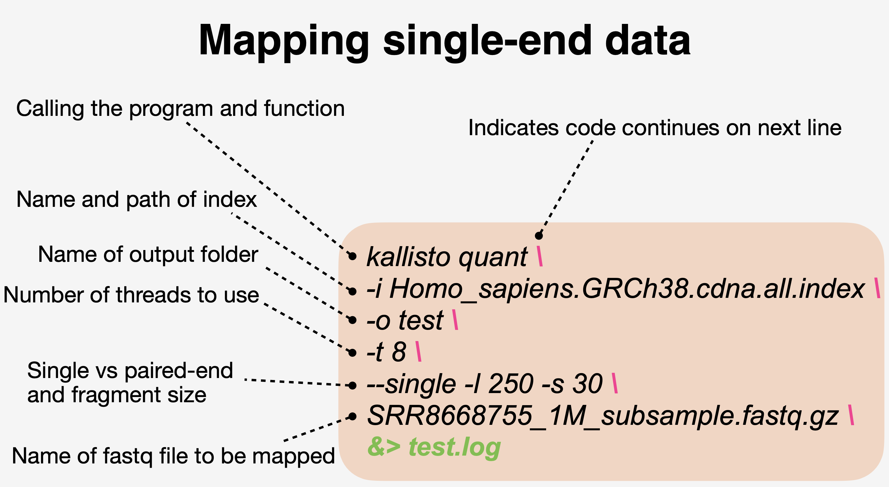

### first the healthy subjects (HS)
kallisto quant -i Homo_sapiens.GRCh38.cdna.all.index -o HS01 -t 4 --single -l 250 -s 30 SRR8668755.fastq.gz &> HS01.log
kallisto quant -i Homo_sapiens.GRCh38.cdna.all.index -o HS02 -t 4 --single -l 250 -s 30 SRR8668756.fastq.gz &> HS02.log
kallisto quant -i Homo_sapiens.GRCh38.cdna.all.index -o HS03 -t 4 --single -l 250 -s 30 SRR8668757.fastq.gz &> HS03.log
kallisto quant -i Homo_sapiens.GRCh38.cdna.all.index -o HS04 -t 4 --single -l 250 -s 30 SRR8668758.fastq.gz &> HS04.log
kallisto quant -i Homo_sapiens.GRCh38.cdna.all.index -o HS05 -t 4 --single -l 250 -s 30 SRR8668759.fastq.gz &> HS05.log
### then the cutaneous leishmaniasis (CL) patients
kallisto quant -i Homo_sapiens.GRCh38.cdna.all.index -o CL08 -t 4 --single -l 250 -s 30 SRR8668769.fastq.gz &> CL08.log
kallisto quant -i Homo_sapiens.GRCh38.cdna.all.index -o CL10 -t 4 --single -l 250 -s 30 SRR8668771.fastq.gz &> CL10.log
kallisto quant -i Homo_sapiens.GRCh38.cdna.all.index -o CL11 -t 4 --single -l 250 -s 30 SRR8668772.fastq.gz &> CL11.log
kallisto quant -i Homo_sapiens.GRCh38.cdna.all.index -o CL12 -t 4 --single -l 250 -s 30 SRR8668773.fastq.gz &> CL12.log
kallisto quant -i Homo_sapiens.GRCh38.cdna.all.index -o CL13 -t 4 --single -l 250 -s 30 SRR8668774.fastq.gz &> CL13.log- Summarize fastqc and kallisto mapping results in a single summary html using MultiQC
multiqc -d .Step3: Import data into R
Load packages
Study design files
### load study design
targets <- read_tsv(here("data",
"230907_DIY_Transcriptomics",
"studydesign.txt"))
targets
## # A tibble: 10 × 3
## sample sra_accession group
## <chr> <chr> <chr>
## 1 HS01 SRR8668755 healthy
## 2 HS02 SRR8668756 healthy
## 3 HS03 SRR8668757 healthy
## 4 HS04 SRR8668758 healthy
## 5 HS05 SRR8668759 healthy
## 6 CL08 SRR8668769 disease
## 7 CL10 SRR8668771 disease
## 8 CL11 SRR8668772 disease
## 9 CL12 SRR8668773 disease
## 10 CL13 SRR8668774 disease
### create file paths for the abundance files
path <- file.path("data", "230907_DIY_Transcriptomics", targets$sample, "abundance.tsv")
path
## [1] "data/230907_DIY_Transcriptomics/HS01/abundance.tsv"
## [2] "data/230907_DIY_Transcriptomics/HS02/abundance.tsv"
## [3] "data/230907_DIY_Transcriptomics/HS03/abundance.tsv"
## [4] "data/230907_DIY_Transcriptomics/HS04/abundance.tsv"
## [5] "data/230907_DIY_Transcriptomics/HS05/abundance.tsv"
## [6] "data/230907_DIY_Transcriptomics/CL08/abundance.tsv"
## [7] "data/230907_DIY_Transcriptomics/CL10/abundance.tsv"
## [8] "data/230907_DIY_Transcriptomics/CL11/abundance.tsv"
## [9] "data/230907_DIY_Transcriptomics/CL12/abundance.tsv"
## [10] "data/230907_DIY_Transcriptomics/CL13/abundance.tsv"
### make sure path is correct
all(file.exists(path))
## [1] TRUEGet organsim specific annotations
tx <- transcripts(EnsDb.Hsapiens.v86, columns=c("tx_id", "gene_name"))
tx <- as_tibble(tx)
head(tx)
## # A tibble: 6 × 7
## seqnames start end width strand tx_id gene_name
## <fct> <int> <int> <int> <fct> <chr> <chr>
## 1 1 11869 14409 2541 + ENST00000456328 DDX11L1
## 2 1 12010 13670 1661 + ENST00000450305 DDX11L1
## 3 1 14404 29570 15167 - ENST00000488147 WASH7P
## 4 1 17369 17436 68 - ENST00000619216 MIR6859-1
## 5 1 29554 31097 1544 + ENST00000473358 MIR1302-2
## 6 1 30267 31109 843 + ENST00000469289 MIR1302-2
### need to change first column name to 'target_id'
tx <- dplyr::rename(tx, target_id = tx_id)
### transcrip ID needs to be the first column in the dataframe
tx <- dplyr::select(tx, "target_id", "gene_name")Load transcript counts
txi_gene <- tximport(path,
type = "kallisto",
tx2gene = tx,
txOut = FALSE, #How does the result change if this =FALSE vs =TRUE?
countsFromAbundance = "lengthScaledTPM",
ignoreTxVersion = TRUE)
### take a look at the type of object
class(txi_gene)
## [1] "list"
names(txi_gene)
## [1] "abundance" "counts" "length"
## [4] "countsFromAbundance"Step4: Wrangling gene expression
### examine the data
tpm <- txi_gene$abundance
counts <- txi_gene$counts
### generate summary stats
tpm_stats <- transform(tpm,
SD=rowSds(tpm),
AVG=rowMeans(tpm),
MED=rowMedians(tpm))
### look at what you created
head(tpm_stats)
## X1 X2 X3 X4 X5 X6
## 5S_rRNA 0.0000000 0.0000000 0.000000 0.00000000 0.000000 0.0000000
## A1BG 6.3823340 6.7399420 3.842043 6.70710000 8.591181 14.6144150
## A1CF 0.0757872 0.0616752 0.214226 0.00859446 0.000000 0.0265036
## A2M 162.5622990 341.8312630 295.814803 261.47230600 169.453100 345.6983730
## A2ML1 109.6624900 80.6018680 90.356840 64.11152700 67.035650 52.5762220
## A2MP1 0.2237170 0.3143760 0.390022 0.15622800 0.122260 0.2700100
## X7 X8 X9 X10 SD
## 5S_rRNA 0.000000 0.0000000 0.00000000 0.0000000 0.00000000
## A1BG 18.182700 12.8662800 12.05296100 9.8268802 4.41172300
## A1CF 0.072777 0.1359934 0.03722713 0.0581254 0.06414927
## A2M 643.554440 341.8972850 324.80208900 415.9663840 135.78415021
## A2ML1 4.401309 5.1981760 1.75721000 15.1189910 39.78108982
## A2MP1 1.087410 0.7737610 0.68834900 0.6378640 0.31619850
## AVG MED
## 5S_rRNA 0.00000000 0.0000000
## A1BG 9.98058361 9.2090306
## A1CF 0.06909094 0.0599003
## A2M 330.30523424 333.3166760
## A2ML1 49.08202830 58.3438745
## A2MP1 0.46639970 0.3521990
### scatter plot
ggplot(tpm_stats) +
aes(x = SD, y = MED) +
geom_point(shape=16, size=2) +
geom_smooth(method=lm) +
geom_hex(show.legend = FALSE) +
labs(y="Median", x = "Standard deviation",
title="Transcripts per million (TPM)",
subtitle="unfiltered, non-normalized data",
caption="DIYtranscriptomics - Spring 2020") +
theme_classic() +
theme_dark() +
theme_bw()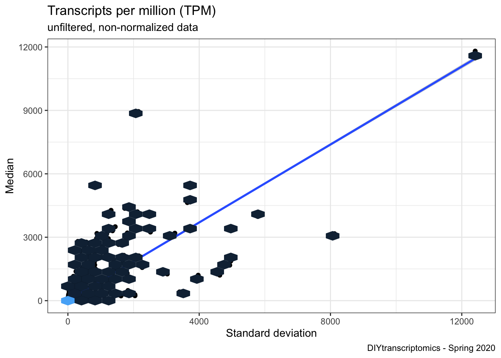
### capture sample labels from study design
sampleLabels <- targets$sample
### make DGElist from the counts
DGEList <- DGEList(txi_gene$counts)
DGEList
## An object of class "DGEList"
## $counts
## Sample1 Sample2 Sample3 Sample4 Sample5 Sample6
## 5S_rRNA 0.00000 0.00000 0.00000 0.000000 0.0000 0.00000
## A1BG 184.19070 245.13169 101.73418 79.204797 13.3335 682.72256
## A1CF 22.94477 23.53171 59.50815 1.064719 0.0000 12.98875
## A2M 11901.13136 31538.08430 19870.31859 7832.900974 667.1460 40967.58721
## A2ML1 15162.86062 14045.04908 11463.06052 3627.335147 498.4618 11767.57706
## Sample7 Sample8 Sample9 Sample10
## 5S_rRNA 0.0000 0.00000 0.00000 0.00000
## A1BG 391.5812 326.10430 397.97768 499.96534
## A1CF 16.4421 36.15938 12.89508 31.02343
## A2M 35158.3894 21982.61779 27205.95758 53686.20520
## A2ML1 454.1300 631.23251 277.98636 3685.37686
## 35366 more rows ...
##
## $samples
## group lib.size norm.factors
## Sample1 1 42300696 1
## Sample2 1 51775632 1
## Sample3 1 40485664 1
## Sample4 1 16661634 1
## Sample5 1 2191577 1
## Sample6 1 55389922 1
## Sample7 1 28800520 1
## Sample8 1 31632164 1
## Sample9 1 39464569 1
## Sample10 1 67827185 1
### get counts per million
cpm <- cpm(DGEList)
colSums(cpm)
## Sample1 Sample2 Sample3 Sample4 Sample5 Sample6 Sample7 Sample8
## 1e+06 1e+06 1e+06 1e+06 1e+06 1e+06 1e+06 1e+06
## Sample9 Sample10
## 1e+06 1e+06
log2_cpm <- cpm(DGEList, log=TRUE)
### connvert data matrix to dataframe
log2_cpm_df <- as_tibble(log2_cpm, rownames = "geneID")
### add sample names
colnames(log2_cpm_df) <- c("geneID", sampleLabels)
### pivot from wide to long
log2_cpm_df_pivot <- pivot_longer(
log2_cpm_df, # dataframe to be pivoted
cols = HS01:CL13, # column names to be stored as a SINGLE variable
names_to = "samples", # name of that new variable (column)
values_to = "expression") # name of new variable (column) storing all the values (data)
p1 <- ggplot(log2_cpm_df_pivot) +
aes(x=samples, y=expression, fill=samples) +
geom_violin(trim = FALSE, show.legend = FALSE) +
stat_summary(fun = "median",
geom = "point",
shape = 95,
size = 10,
color = "black",
show.legend = FALSE) +
labs(y="log2 expression", x = "sample",
title="Log2 Counts per Million (CPM)",
subtitle="unfiltered, non-normalized",
caption=paste0("produced on ", Sys.time())) +
theme_bw()
p1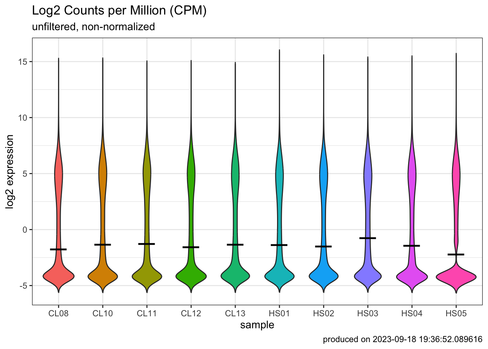
- How many genes or transcripts have no read counts at all?
### filter data
table(rowSums(DGEList$counts==0)==10)
##
## FALSE TRUE
## 29373 5998
### how many genes had more than 1 CPM (TRUE) in at least 3 samples
### set cutoff
keepers <- rowSums(cpm>1)>=5 #user defined
DGEList_filtered <- DGEList[keepers,]
log2_cpm_filtered <- cpm(DGEList_filtered, log=TRUE)
log2_cpm_filtered_df <- as_tibble(log2_cpm_filtered, rownames = "geneID")
colnames(log2_cpm_filtered_df) <- c("geneID", sampleLabels)
log2_cpm_filtered_df_pivot <- pivot_longer(log2_cpm_filtered_df, # dataframe to be pivoted
cols = HS01:CL13, # column names to be stored as a SINGLE variable
names_to = "samples", # name of that new variable (column)
values_to = "expression") # name of new variable (column) storing all the values (data)
p2 <- ggplot(log2_cpm_filtered_df_pivot) +
aes(x=samples, y=expression, fill=samples) +
geom_violin(trim = FALSE, show.legend = FALSE) +
stat_summary(fun = "median",
geom = "point",
shape = 95,
size = 10,
color = "black",
show.legend = FALSE) +
labs(y="log2 expression", x = "sample",
title="Log2 Counts per Million (CPM)",
subtitle="filtered, non-normalized",
caption=paste0("produced on ", Sys.time())) +
theme_bw()
p2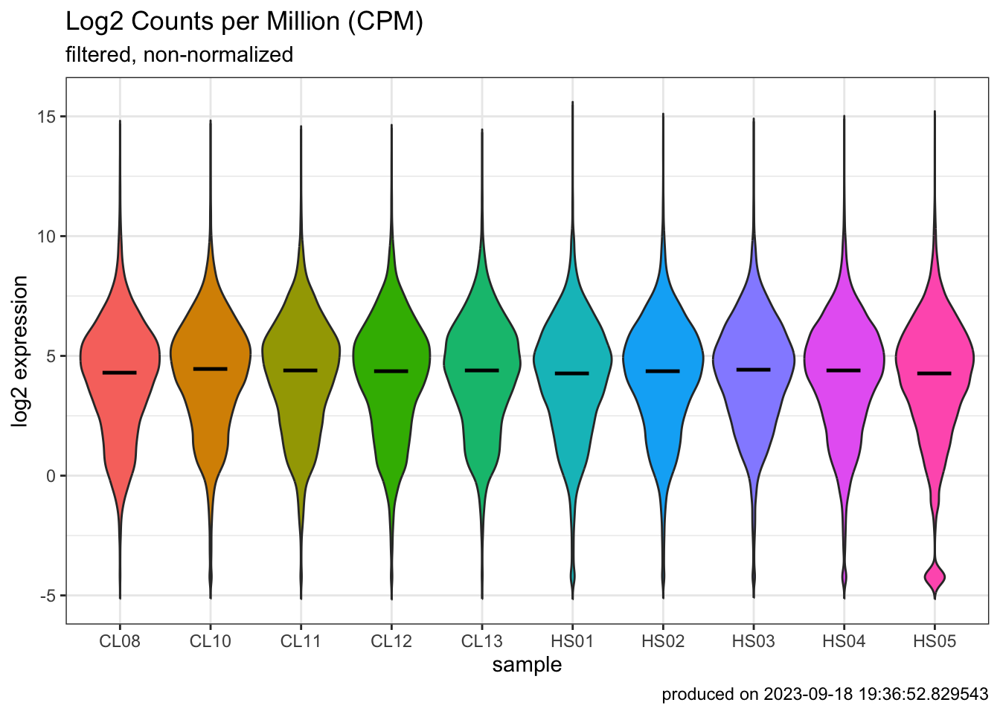
### normalize data
DGEList_filtered_norm <- calcNormFactors(DGEList_filtered, method = "TMM")
log2_cpm_filtered_norm <- cpm(DGEList_filtered_norm, log=TRUE)
log2_cpm_filtered_norm_df <- as_tibble(log2_cpm_filtered_norm, rownames = "geneID")
colnames(log2_cpm_filtered_norm_df) <- c("geneID", sampleLabels)
log2_cpm_filtered_norm_df_pivot <- pivot_longer(log2_cpm_filtered_norm_df, # dataframe to be pivoted
cols = HS01:CL13, # column names to be stored as a SINGLE variable
names_to = "samples", # name of that new variable (column)
values_to = "expression") # name of new variable (column) storing all the values (data)
p3 <- ggplot(log2_cpm_filtered_norm_df_pivot) +
aes(x=samples, y=expression, fill=samples) +
geom_violin(trim = FALSE, show.legend = FALSE) +
stat_summary(fun = "median",
geom = "point",
shape = 95,
size = 10,
color = "black",
show.legend = FALSE) +
labs(y="log2 expression", x = "sample",
title="Log2 Counts per Million (CPM)",
subtitle="filtered, TMM normalized",
caption=paste0("produced on ", Sys.time())) +
theme_bw()
plot_grid(p1, p2, p3, labels = c('A', 'B', 'C'), label_size = 12)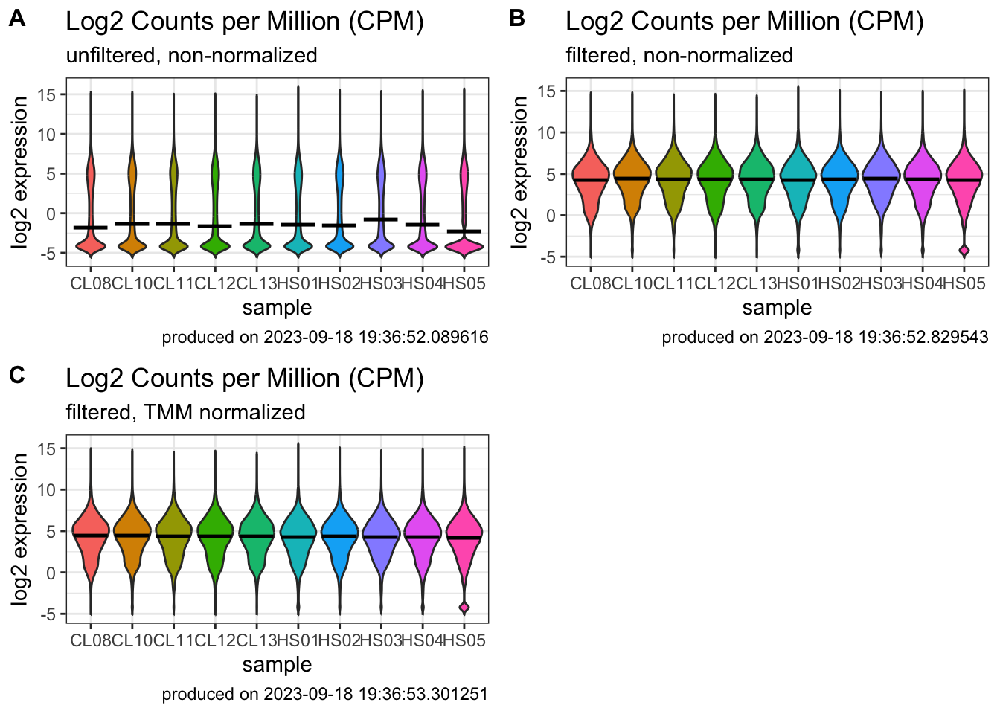
Step5: Data exploration with multivariate analysis
### Identify variables of interest in study design file
group <- targets$group
group <- factor(group)
group
## [1] healthy healthy healthy healthy healthy disease disease disease disease
## [10] disease
## Levels: disease healthyHierarchical clustering
### calculate distance methods (e.g. switch from 'maximum' to 'euclidean')
distance <- dist(t(log2_cpm_filtered_norm), method = "maximum")
### other distance methods are "euclidean", maximum", "manhattan", "canberra", "binary" or "minkowski"
clusters <- hclust(distance, method = "average")
### other agglomeration methods are "ward.D", "ward.D2", "single", "complete", "average", "mcquitty", "median", or "centroid"
plot(clusters, labels=sampleLabels)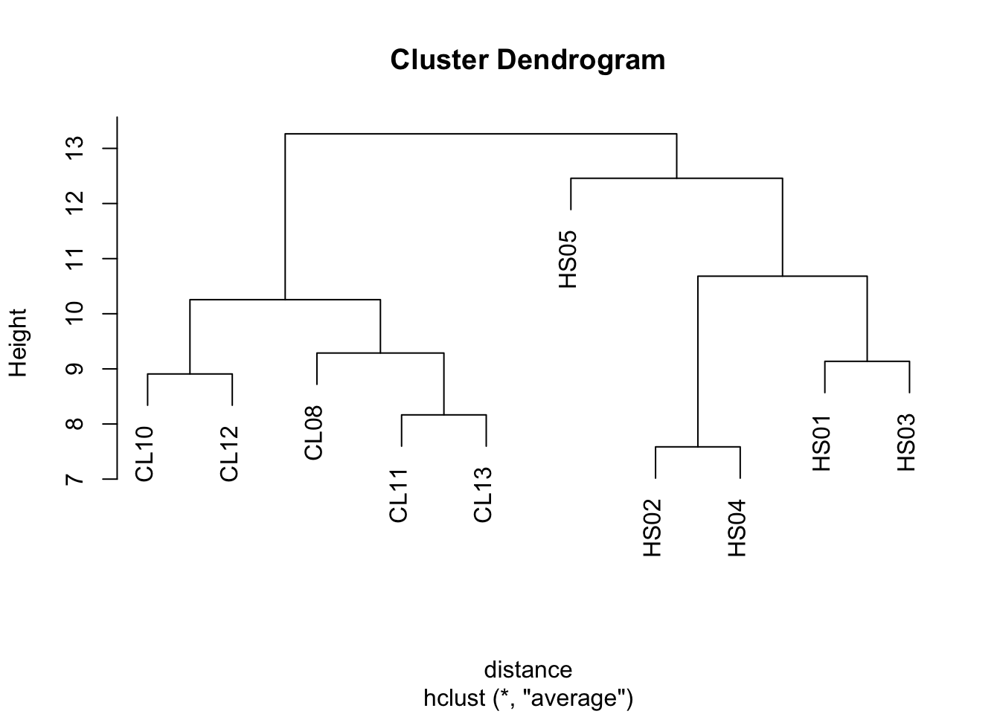
Principal compoent analysis
pca_res <- prcomp(t(log2_cpm_filtered_norm), scale. = FALSE, retx = TRUE)
### look at the PCA result (pca.res)
ls(pca_res)
## [1] "center" "rotation" "scale" "sdev" "x"
### Prints variance summary for all principal components.
summary(pca_res)
## Importance of components:
## PC1 PC2 PC3 PC4 PC5 PC6
## Standard deviation 113.9821 49.8074 33.42376 27.08082 26.40296 22.23750
## Proportion of Variance 0.6656 0.1271 0.05723 0.03757 0.03571 0.02533
## Cumulative Proportion 0.6656 0.7927 0.84993 0.88750 0.92322 0.94855
## PC7 PC8 PC9 PC10
## Standard deviation 20.50645 17.71945 16.42366 1.816e-13
## Proportion of Variance 0.02154 0.01609 0.01382 0.000e+00
## Cumulative Proportion 0.97010 0.98618 1.00000 1.000e+00
### $rotation shows you how much each gene influenced each PC (called 'scores')
head(pca_res$rotation)
## PC1 PC2 PC3 PC4 PC5
## A1BG 0.006058601 -0.005265865 0.0030322868 0.008759217 0.0021903806
## A2M 0.004897345 0.002459393 -0.0029437295 0.010128989 0.0010754828
## A2ML1 -0.015426376 0.002131922 0.0236833694 0.012776801 0.0151330784
## A2MP1 0.008361769 0.005416383 -0.0080073403 -0.004989098 0.0019137300
## A4GALT -0.004861196 -0.010071400 -0.0040747825 0.004365382 -0.0073287027
## AAAS 0.002247684 -0.005546829 -0.0003891962 0.005401109 -0.0008667994
## PC6 PC7 PC8 PC9 PC10
## A1BG 0.002600255 1.165903e-02 0.002109927 0.006017461 -0.62642253
## A2M -0.003082754 -2.988929e-03 0.007583352 -0.002958490 -0.07649096
## A2ML1 -0.013272183 -1.389944e-02 0.008501332 0.020687796 0.29435235
## A2MP1 -0.002415560 1.626299e-03 0.011281299 -0.005577339 -0.50451276
## A4GALT -0.009698589 6.199904e-05 0.012467687 0.004110126 -0.31572438
## AAAS 0.006991981 3.783003e-03 0.004628266 0.003568768 -0.14061416
### 'x' shows you how much each sample influenced each PC (called 'loadings')
pca_res$x
## PC1 PC2 PC3 PC4 PC5 PC6
## Sample1 -116.29139 38.2334807 21.154790 -31.204512 24.3342557 -5.032445
## Sample2 -98.08443 28.5182187 6.488451 20.455248 -24.7150117 -5.625522
## Sample3 -98.57599 46.3377421 -21.880766 -22.638077 26.9619112 8.312240
## Sample4 -102.83232 27.1997919 -10.521681 36.884584 -34.6489813 11.837625
## Sample5 -119.48548 -130.0448432 -8.771308 -8.078419 0.7747427 -2.609032
## Sample6 76.83934 -13.0282654 65.541177 34.668976 32.4966464 9.756467
## Sample7 114.80802 0.9427947 -66.411954 27.226075 30.8708143 -6.756527
## Sample8 122.14072 -0.8992447 -2.600281 -31.000051 -26.0328136 19.278692
## Sample9 129.23356 -4.8764679 3.983424 -16.285254 -13.4446636 25.667565
## Sample10 92.24799 7.6167930 13.018146 -10.028570 -16.5969001 -54.829063
## PC7 PC8 PC9 PC10
## Sample1 37.289161 -8.2755495 9.2338103 6.432316e-13
## Sample2 9.263960 37.6085903 -14.4523481 7.064106e-14
## Sample3 -40.584484 0.6580365 -8.3486393 3.455381e-13
## Sample4 -3.089166 -28.1333136 11.4331050 -5.619926e-14
## Sample5 -2.014396 -0.2124505 -0.6860841 -1.205842e-13
## Sample6 -10.563273 2.1965073 5.3204553 -6.485607e-14
## Sample7 15.193876 4.0838551 4.1812220 -2.588419e-13
## Sample8 -5.936520 15.6564254 28.6671255 -1.908206e-13
## Sample9 11.836127 -13.5624080 -32.5109827 -3.271781e-13
## Sample10 -11.395285 -10.0196929 -2.8376640 1.788202e-13
### A screeplot is a standard way to view eigenvalues for each PCA
screeplot(pca_res) 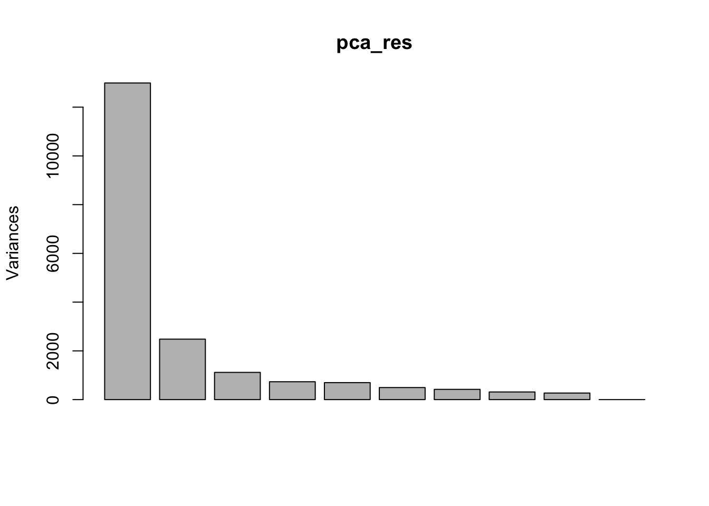
- Can we figure out the identify of outlier?
### Visualize PCA result
pca_res_df <- as_tibble(pca_res$x)
pca_plot <- ggplot(pca_res_df) +
aes(x=PC1, y=PC2, label=sampleLabels, color = group) +
geom_point(size=4) +
stat_ellipse() +
xlab(paste0("PC1 (",pc_per[1],"%",")")) +
ylab(paste0("PC2 (",pc_per[2],"%",")")) +
labs(title="PCA plot",
caption=paste0("produced on ", Sys.time())) +
coord_fixed() +
theme_bw()
pca_plot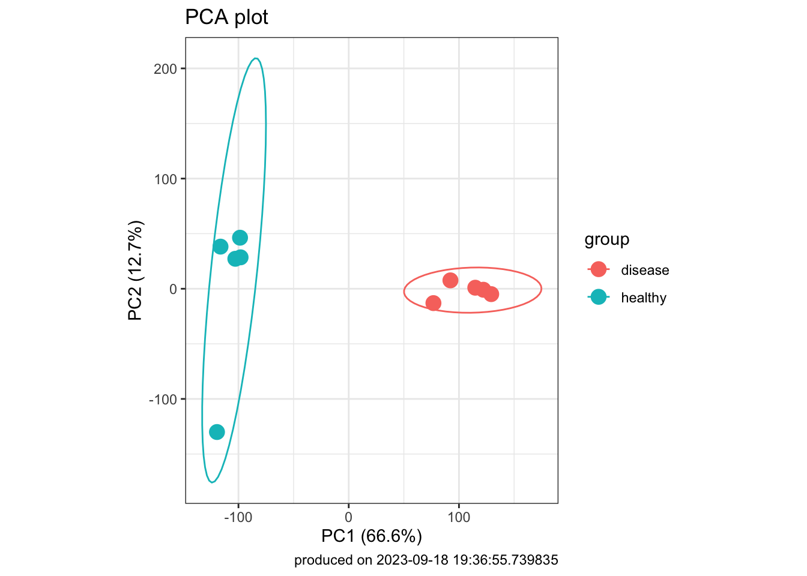
# ggplotly(pca_plot)- Another way to view PCA laodings to understand impact of each sample on each pricipal component
pca_res_df <- pca_res$x[,1:4] %>%
as_tibble() %>%
add_column(sample = sampleLabels,
group = group)
### dataframe to be pivoted
pca_pivot <- pivot_longer(pca_res_df,
cols = PC1:PC4, # column names to be stored as a SINGLE variable
names_to = "PC", # name of that new variable (column)
values_to = "loadings") # name of new variable (column) storing all the values (data)
ggplot(pca_pivot) +
aes(x=sample, y=loadings, fill=group) + # you could iteratively 'paint' different covariates onto this plot using the 'fill' aes
geom_bar(stat="identity") +
facet_wrap(~PC) +
labs(title="PCA 'small multiples' plot",
caption=paste0("produced on ", Sys.time())) +
theme_bw() +
coord_flip()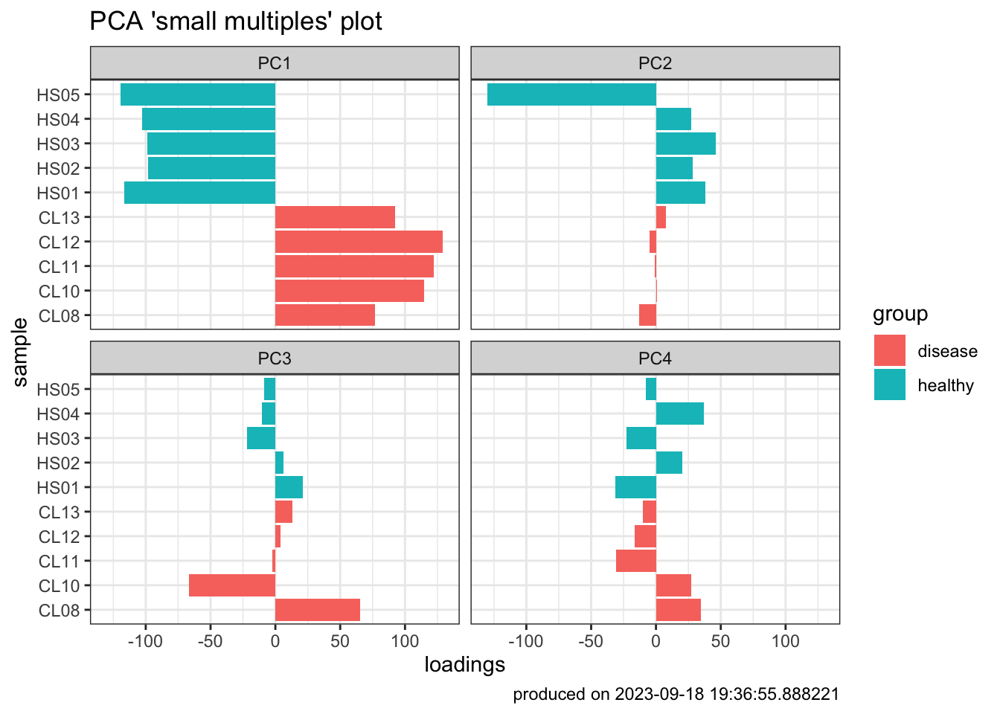
mydata_df <- mutate(log2_cpm_filtered_norm_df,
healthy.AVG = (HS01 + HS02 + HS03 + HS04 + HS05)/5,
disease.AVG = (CL08 + CL10 + CL11 + CL12 + CL13)/5,
#now make columns comparing each of the averages above that you're interested in
LogFC = (disease.AVG - healthy.AVG)) %>%
mutate_if(is.numeric, round, 2)
### sort data
mydata_sort <- mydata_df %>%
dplyr::arrange(desc(LogFC)) %>%
dplyr::select(geneID, LogFC)
mydata_sort
## # A tibble: 15,765 × 2
## geneID LogFC
## <chr> <dbl>
## 1 IGLC3 10.6
## 2 MMP1 10.4
## 3 IGKV1-5 10.2
## 4 IGLV3-1 9.96
## 5 IGLV3-19 9.9
## 6 IGLC1 9.88
## 7 IGKV1D-39 9.87
## 8 IGLL5 9.85
## 9 IGKV1D-33 9.83
## 10 IGLV2-8 9.65
## # ℹ 15,755 more rows
### filter data
mydata_filter <- mydata_df %>%
dplyr::filter(geneID=="MMP1" | geneID=="GZMB" | geneID=="IL1B" | geneID=="GNLY" | geneID=="IFNG"
| geneID=="CCL4" | geneID=="PRF1" | geneID=="APOBEC3A" | geneID=="UNC13A" ) %>%
dplyr::select(geneID, healthy.AVG, disease.AVG, LogFC) %>%
dplyr::arrange(desc(LogFC))
mydata_filter
## # A tibble: 9 × 4
## geneID healthy.AVG disease.AVG LogFC
## <chr> <dbl> <dbl> <dbl>
## 1 MMP1 1.44 11.9 10.4
## 2 IFNG -3.65 4.42 8.07
## 3 CCL4 -1.75 6.14 7.89
## 4 GZMB -0.58 6.47 7.05
## 5 GNLY 0.98 7.17 6.19
## 6 IL1B 0.63 6.48 5.85
## 7 PRF1 1.03 6.64 5.61
## 8 APOBEC3A 0.27 5.6 5.33
## 9 UNC13A -0.78 1.95 2.73- Produce publication-quality tables using
gtpackage
gt(mydata_filter)| geneID | healthy.AVG | disease.AVG | LogFC |
|---|---|---|---|
| MMP1 | 1.44 | 11.88 | 10.43 |
| IFNG | -3.65 | 4.42 | 8.07 |
| CCL4 | -1.75 | 6.14 | 7.89 |
| GZMB | -0.58 | 6.47 | 7.05 |
| GNLY | 0.98 | 7.17 | 6.19 |
| IL1B | 0.63 | 6.48 | 5.85 |
| PRF1 | 1.03 | 6.64 | 5.61 |
| APOBEC3A | 0.27 | 5.60 | 5.33 |
| UNC13A | -0.78 | 1.95 | 2.73 |
mydata_filter %>%
gt() %>%
fmt_number(columns=2:4, decimals = 1) %>%
tab_header(title = md("**Regulators of skin pathogenesis**"),
subtitle = md("*during cutaneous leishmaniasis*")) %>%
tab_footnote(
footnote = "Deletion or blockaid ameliorates disease in mice",
locations = cells_body(
columns = geneID,
rows = c(6, 7))) %>%
tab_footnote(
footnote = "Associated with treatment failure in multiple studies",
locations = cells_body(
columns = geneID,
rows = c(2:9))) %>%
tab_footnote(
footnote = "Implicated in parasite control",
locations = cells_body(
columns = geneID,
rows = c(2))) %>%
tab_source_note(
source_note = md("Reference: Amorim *et al*., (2019). DOI: 10.1126/scitranslmed.aar3619"))| Regulators of skin pathogenesis | |||
| during cutaneous leishmaniasis | |||
| geneID | healthy.AVG | disease.AVG | LogFC |
|---|---|---|---|
| MMP1 | 1.4 | 11.9 | 10.4 |
| IFNG1,2 | −3.6 | 4.4 | 8.1 |
| CCL41 | −1.8 | 6.1 | 7.9 |
| GZMB1 | −0.6 | 6.5 | 7.0 |
| GNLY1 | 1.0 | 7.2 | 6.2 |
| IL1B3,1 | 0.6 | 6.5 | 5.8 |
| PRF13,1 | 1.0 | 6.6 | 5.6 |
| APOBEC3A1 | 0.3 | 5.6 | 5.3 |
| UNC13A1 | −0.8 | 1.9 | 2.7 |
| Reference: Amorim et al., (2019). DOI: 10.1126/scitranslmed.aar3619 | |||
| 1 Associated with treatment failure in multiple studies | |||
| 2 Implicated in parasite control | |||
| 3 Deletion or blockaid ameliorates disease in mice | |||
- Make an interactive table using the
DTpackage
- Make an interactive scatter plot with
plotly

Step6: Differential gene expression
Set up design matrix
group <- factor(targets$group)
design <- model.matrix(~0 + group)
colnames(design) <- levels(group)
# NOTE: if you need a paired analysis (a.k.a.'blocking' design) or have a batch effect, the following design is useful
# design <- model.matrix(~block + treatment)
# this is just an example. 'block' and 'treatment' would need to be objects in your environmentModel mean-variance trend and fit linear model to data
head(DGEList_filtered_norm)
## An object of class "DGEList"
## $counts
## Sample1 Sample2 Sample3 Sample4 Sample5 Sample6
## A1BG 184.19070 245.13169 101.73418 79.20480 13.3334957 682.72256
## A2M 11901.13136 31538.08430 19870.31859 7832.90097 667.1460374 40967.58721
## A2ML1 15162.86062 14045.04908 11463.06052 3627.33515 498.4617540 11767.57706
## A2MP1 29.31478 51.91491 46.89141 8.37674 0.8615391 57.27197
## A4GALT 128.32345 355.39448 131.42493 75.43359 30.6454026 112.79123
## AAAS 269.07806 457.62142 257.49394 147.56154 27.9749726 636.62246
## Sample7 Sample8 Sample9 Sample10
## A1BG 391.58119 326.10430 397.9777 499.9653
## A2M 35158.38935 21982.61779 27205.9576 53686.2052
## A2ML1 454.12997 631.23251 277.9864 3685.3769
## A2MP1 106.33010 89.04506 103.1984 147.3506
## A4GALT 87.64872 88.03357 62.6173 230.0622
## AAAS 382.02897 412.70476 446.8081 509.4904
##
## $samples
## group lib.size norm.factors
## Sample1 1 42300696 0.9838341
## Sample2 1 51775632 1.0056785
## Sample3 1 40485664 1.1055948
## Sample4 1 16661634 1.0332639
## Sample5 1 2191577 1.0154852
## Sample6 1 55389922 0.8810033
## Sample7 1 28800520 1.0117840
## Sample8 1 31632164 1.0093077
## Sample9 1 39464569 0.9639270
## Sample10 1 67827185 1.0046274
### Use VOOM function from Limma package to model the mean-variance relationship
v_DEGList_filtered_norm <- voom(DGEList_filtered_norm, design, plot = TRUE)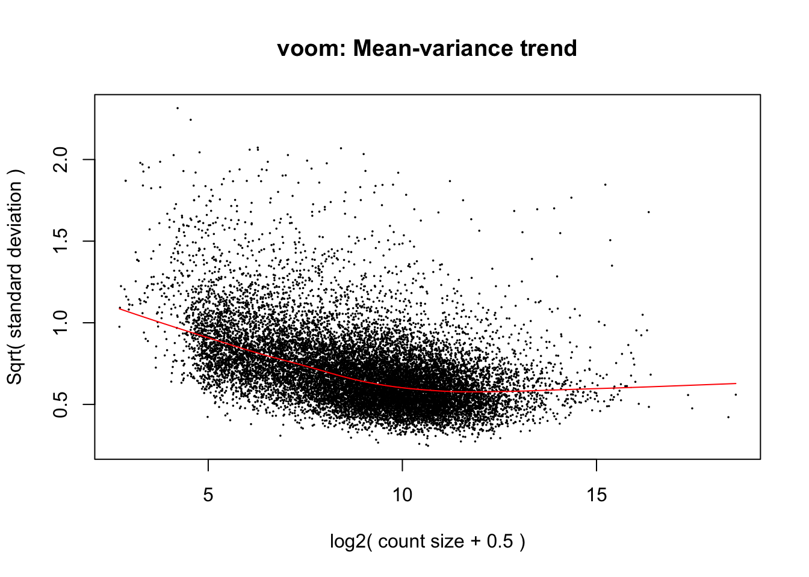
# fit a linear model to your data
fit <- lmFit(v_DEGList_filtered_norm, design)
### contrast matrix
contrast_matrix <- makeContrasts(infection = disease - healthy,
levels=design)
### extract the linear model fit
fits <- contrasts.fit(fit, contrast_matrix)
### get bayesian stats for the linear model fit
ebFit <- eBayes(fits)
#write.fit(ebFit, file="lmfit_results.txt")
### top table to view DEGs
TopHits <- topTable(ebFit, adjust ="BH", coef=1, number=40000, sort.by="logFC")
### convert to a tibble
TopHits_df <- TopHits %>%
as_tibble(rownames = "geneID")
TopHits_df
## # A tibble: 15,765 × 7
## geneID logFC AveExpr t P.Value adj.P.Val B
## <chr> <dbl> <dbl> <dbl> <dbl> <dbl> <dbl>
## 1 MMP1 10.8 6.65 13.4 0.0000000182 0.00000123 10.0
## 2 IGLC3 10.3 3.49 7.50 0.00000815 0.0000778 4.06
## 3 IGKV1D-33 10.2 1.12 9.29 0.000000913 0.0000160 6.11
## 4 IGKV2D-28 10.1 0.898 9.50 0.000000723 0.0000137 6.32
## 5 IGLV3-25 10.0 0.242 6.89 0.0000186 0.000147 3.27
## 6 IGLV3-1 10.0 1.75 11.8 0.0000000715 0.00000281 8.36
## 7 IGKV1-5 9.93 3.36 13.8 0.0000000124 0.00000101 10.0
## 8 IGHV1-3 9.89 0.447 6.24 0.0000468 0.000302 2.37
## 9 IGLV3-19 9.84 2.18 6.93 0.0000175 0.000140 3.33
## 10 IGHV3-21 9.80 1.42 9.00 0.00000128 0.0000200 5.80
## # ℹ 15,755 more rows
Limma outputs
- TopTable (from Limma) outputs a few different stats:
- logFC, AveExpr, and P.Value should be self-explanatory
- adj.P.Val is your adjusted P value, also known as an FDR (if BH method was used for multiple testing correction)
- B statistic is the log-odds that that gene is differentially expressed. If B = 1.5, then log odds is e^1.5, where e is euler’s constant (approx. 2.718). So, the odds of differential expression os about 4.8 to 1
- t statistic is ratio of the logFC to the standard error (where the error has been moderated across all genes…because of Bayesian approach)
vplot <- ggplot(TopHits_df) +
aes(y=-log10(adj.P.Val), x=logFC, text = paste("Symbol:", geneID)) +
geom_point(size=2) +
geom_hline(yintercept = -log10(0.01), linetype="longdash", colour="grey", linewidth=1) +
geom_vline(xintercept = 1, linetype="longdash", colour="#BE684D", linewidth=1) +
geom_vline(xintercept = -1, linetype="longdash", colour="#2C467A", linewidth=1) +
#annotate("rect", xmin = 1, xmax = 12, ymin = -log10(0.01), ymax = 7.5, alpha=.2, fill="#BE684D") +
#annotate("rect", xmin = -1, xmax = -12, ymin = -log10(0.01), ymax = 7.5, alpha=.2, fill="#2C467A") +
labs(title="Volcano plot",
subtitle = "Cutaneous leishmaniasis",
caption=paste0("produced on ", Sys.time())) +
theme_bw()
vplot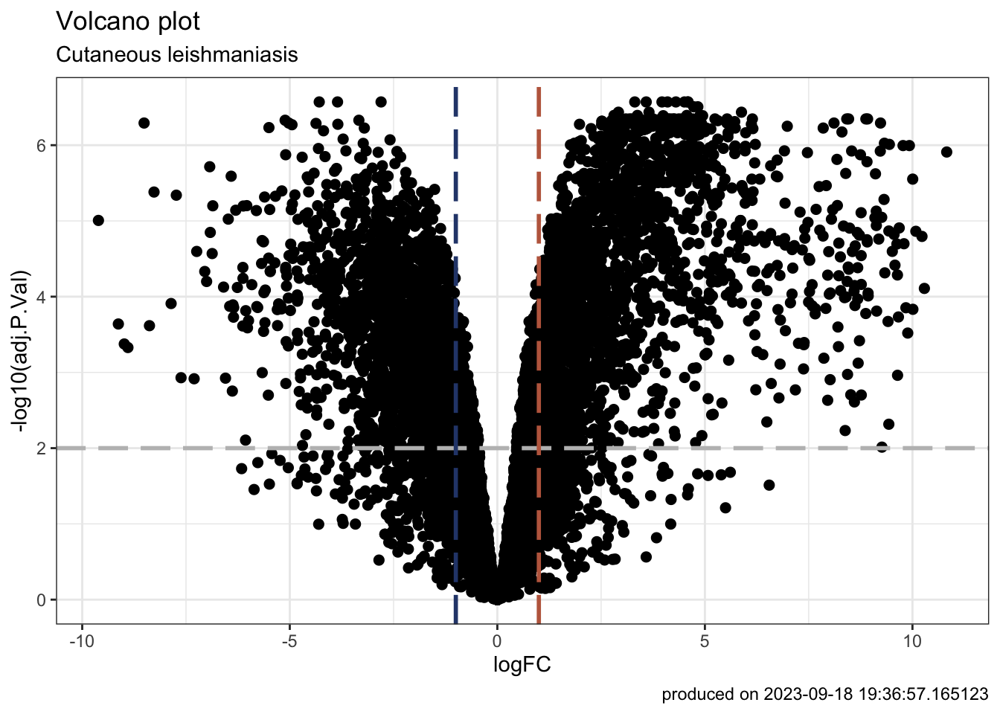
# ggplotly(vplot)### pull out DEGs and make venn diagram
results <- decideTests(ebFit, method="global", adjust.method="BH", p.value=0.01, lfc=2)
head(results)
## TestResults matrix
## Contrasts
## infection
## A1BG 0
## A2M 0
## A2ML1 -1
## A2MP1 0
## A4GALT 0
## AAAS 0
summary(results)
## infection
## Down 1012
## NotSig 13446
## Up 1307
vennDiagram(results, include="up")
### retrieve expression data for DEGs
head(v_DEGList_filtered_norm$E)
## Sample1 Sample2 Sample3 Sample4 Sample5 Sample6
## A1BG 2.1498709 2.237982296 1.19157184 2.2109278 2.6359548 3.8074408
## A2M 8.1597752 9.242459704 8.79420169 8.8297563 8.2288005 9.7134419
## A2ML1 8.5092054 8.075454826 8.00060559 7.7192264 7.8086463 7.9138199
## A2MP1 -0.4811408 0.009534871 0.08239155 -0.9556369 -0.7089007 0.2435267
## A4GALT 1.6301549 2.772935178 1.55941146 2.1409994 3.8068082 1.2151214
## AAAS 2.6954627 3.137215647 2.52703139 3.1043863 3.6774835 3.7066558
## Sample7 Sample8 Sample9 Sample10
## A1BG 3.750084 3.354713 3.3888732 2.876674
## A2M 10.236678 9.427422 9.4821796 9.621825
## A2ML1 3.963625 4.306483 2.8719810 5.757340
## A2MP1 1.874250 1.487855 1.4467684 1.117544
## A4GALT 1.596943 1.471466 0.7304817 1.758560
## AAAS 3.714501 3.694027 3.5556433 2.903874
colnames(v_DEGList_filtered_norm$E) <- sampleLabels
diffGenes <- v_DEGList_filtered_norm$E[results[,1] !=0,]
head(diffGenes)
## HS01 HS02 HS03 HS04 HS05 CL08 CL10
## A2ML1 8.509205 8.075455 8.000606 7.719226 7.808646 7.913820 3.9636246
## AADAC 3.783598 3.145125 3.421001 3.846583 4.124090 2.241617 -3.5057299
## AADACL2 6.884775 7.025967 6.096531 6.700546 6.104662 5.215819 -5.8649243
## AARD 2.817882 1.719728 2.562007 2.090062 2.784928 1.028134 0.2785801
## ABCA10 4.429922 4.330043 6.261231 3.871370 2.785400 2.261820 2.9336235
## ABCA12 8.609129 7.810834 7.884251 7.603805 7.963791 7.338358 3.3247149
## CL11 CL12 CL13
## A2ML1 4.3064835 2.8719810 5.7573398
## AADAC 0.1777154 -0.9997370 -0.5843452
## AADACL2 2.9288016 2.0251967 3.5424241
## AARD 0.2142361 -0.4255113 0.1288021
## ABCA10 2.4838643 2.4430992 0.6882190
## ABCA12 5.2844659 4.7055495 6.6999992
dim(diffGenes)
## [1] 2319 10
#convert DEGs to a dataframe using as_tibble
diffGenes_df <- as_tibble(diffGenes, rownames = "geneID")
### create interactive tables to display DEGs
# datatable(diffGenes_df,
# extensions = c('KeyTable', "FixedHeader"),
# caption = 'Table 1: DEGs in cutaneous leishmaniasis',
# options = list(keys = TRUE, searchHighlight = TRUE, pageLength = 10, lengthMenu = c("10", "25", "50", "100"))) %>%
# formatRound(columns=c(2:11), digits=2)
### write DEGs to a file
# write_tsv(diffGenes_df, "DiffGenes.txt")
#NOTE: this .txt file can be directly used for input into other clustering or network analysis tools (e.g., String, Clust (https://github.com/BaselAbujamous/clust, etc.)Step7: Module identification
heatcolors <- rev(brewer.pal(name="RdBu", n=11))
clustRows <- hclust(as.dist(1-cor(t(diffGenes), method="pearson")), method="complete") #cluster rows by pearson correlation
clustColumns <- hclust(as.dist(1-cor(diffGenes, method="spearman")), method="complete")
module_assign <- cutree(clustRows, k=2)
module_color <- rainbow(length(unique(module_assign)), start=0.1, end=0.9)
module_color <- module_color[as.vector(module_assign)]
heatmap.2(diffGenes,
Rowv=as.dendrogram(clustRows),
Colv=as.dendrogram(clustColumns),
RowSideColors=module_color,
col=heatcolors, scale='row', labRow=NA,
density.info="none", trace="none",
cexRow=1, cexCol=1, margins=c(8,20))
modulePick <- 2
Module_up <- diffGenes[names(module_assign[module_assign %in% modulePick]),]
hrsub_up <- hclust(as.dist(1-cor(t(Module_up), method="pearson")), method="complete")
heatmap.2(
Module_up,
Rowv=as.dendrogram(hrsub_up),
Colv=NA,
labRow = NA,
col=heatcolors, scale="row",
density.info="none", trace="none",
RowSideColors=module_color[module_assign%in%modulePick], margins=c(8,20)
)
modulePick <- 1
Module_down <- diffGenes[names(module_assign[module_assign %in% modulePick]),]
hrsub_down <- hclust(as.dist(1-cor(t(Module_down), method="pearson")), method="complete")
heatmap.2(Module_down,
Rowv=as.dendrogram(hrsub_down),
Colv=NA,
labRow = NA,
col=heatcolors, scale="row",
density.info="none", trace="none",
RowSideColors=module_color[module_assign%in%modulePick], margins=c(8,20))Step8: Functional enrichment analysis
# Carry out GO enrichment using gProfiler2 ----
# use topTable result to pick the top genes for carrying out a Gene Ontology (GO) enrichment analysis
myTopHits <- topTable(ebFit, adjust ="BH", coef=1, number=50, sort.by="logFC")
# use the 'gost' function from the gprofiler2 package to run GO enrichment analysis
gost.res <- gost(rownames(myTopHits), organism = "hsapiens", correction_method = "fdr")
# produce an interactive manhattan plot of enriched GO terms
gostplot(gost.res, interactive = T, capped = T) #set interactive=FALSE to get plot for publications
# produce a publication quality static manhattan plot with specific GO terms highlighted
# rerun the above gostplot function with 'interactive=F' and save to an object 'mygostplot'
# publish_gostplot(
# mygostplot, #your static gostplot from above
# highlight_terms = c("GO:0034987"),
# filename = NULL,
# width = NA,
# height = NA)
#you can also generate a table of your gost results
publish_gosttable(
gost.res,
highlight_terms = NULL,
use_colors = TRUE,
show_columns = c("source", "term_name", "term_size", "intersection_size"),
filename = NULL,
ggplot=TRUE)
# now repeat the above steps using only genes from a single module from the step 6 script, by using `rownames(myModule)`
# what is value in breaking up DEGs into modules for functional enrichment analysis?
# Perform GSEA using clusterProfiler ----
# there are a few ways to get msigDB collections into R
# option1: download directly from msigdb and load from your computer
# can use the 'read.gmt' function from clusterProfiler package to create a dataframe,
# alternatively, you can read in using 'getGmt' function from GSEABase package if you need a GeneSetCollection object
c2cp <- read.gmt("/Users/danielbeiting/Dropbox/MSigDB/c2.cp.v7.1.symbols.gmt")
# option2: use the msigdb package to access up-to-date collections
# this option has the additional advantage of providing access to species-specific collections
# are also retrieved as tibbles
msigdbr_species()
hs_gsea <- msigdbr(species = "Homo sapiens") #gets all collections/signatures with human gene IDs
#take a look at the categories and subcategories of signatures available to you
hs_gsea %>%
dplyr::distinct(gs_cat, gs_subcat) %>%
dplyr::arrange(gs_cat, gs_subcat)
# choose a specific msigdb collection/subcollection
# since msigdbr returns a tibble, we'll use dplyr to do a bit of wrangling
hs_gsea_c2 <- msigdbr(species = "Homo sapiens", # change depending on species your data came from
category = "C2") %>% # choose your msigdb collection of interest
dplyr::select(gs_name, gene_symbol) #just get the columns corresponding to signature name and gene symbols of genes in each signature
# Now that you have your msigdb collections ready, prepare your data
# grab the dataframe you made in step3 script
# Pull out just the columns corresponding to gene symbols and LogFC for at least one pairwise comparison for the enrichment analysis
mydata.df.sub <- dplyr::select(mydata.df, geneID, LogFC)
# construct a named vector
mydata.gsea <- mydata.df.sub$LogFC
names(mydata.gsea) <- as.character(mydata.df.sub$geneID)
mydata.gsea <- sort(mydata.gsea, decreasing = TRUE)
# run GSEA using the 'GSEA' function from clusterProfiler
myGSEA.res <- GSEA(mydata.gsea, TERM2GENE=hs_gsea_c2, verbose=FALSE)
myGSEA.df <- as_tibble(myGSEA.res@result)
# view results as an interactive table
datatable(myGSEA.df,
extensions = c('KeyTable', "FixedHeader"),
caption = 'Signatures enriched in leishmaniasis',
options = list(keys = TRUE, searchHighlight = TRUE, pageLength = 10, lengthMenu = c("10", "25", "50", "100"))) %>%
formatRound(columns=c(2:10), digits=2)
# create enrichment plots using the enrichplot package
gseaplot2(myGSEA.res,
geneSetID = c(6, 47, 262), #can choose multiple signatures to overlay in this plot
pvalue_table = FALSE, #can set this to FALSE for a cleaner plot
title = myGSEA.res$Description[47]) #can also turn off this title
# add a variable to this result that matches enrichment direction with phenotype
myGSEA.df <- myGSEA.df %>%
mutate(phenotype = case_when(
NES > 0 ~ "disease",
NES < 0 ~ "healthy"))
# create 'bubble plot' to summarize y signatures across x phenotypes
ggplot(myGSEA.df[1:20,], aes(x=phenotype, y=ID)) +
geom_point(aes(size=setSize, color = NES, alpha=-log10(p.adjust))) +
scale_color_gradient(low="blue", high="red") +
theme_bw()
# Competitive GSEA using CAMERA----
# for competitive tests the null hypothesis is that genes in the set are, at most, as often differentially expressed as genes outside the set
# first let's create a few signatures to test in our enrichment analysis
mySig <- rownames(myTopHits) #if your own data is from mice, wrap this in 'toupper()' to make gene symbols all caps
mySig2 <- sample((rownames(v.DEGList.filtered.norm$E)), size = 50, replace = FALSE)
collection <- list(real = mySig, fake = mySig2)
# now test for enrichment using CAMERA
camera.res <- camera(v.DEGList.filtered.norm$E, collection, design, contrast.matrix[,1])
camera.df <- as_tibble(camera.res, rownames = "setName")
camera.df
# Self-contained GSEA using ROAST----
# remember that for self-contained the null hypothesis is that no genes in the set are differentially expressed
mroast(v.DEGList.filtered.norm$E, collection, design, contrast=1) #mroast adjusts for multiple testing
# now repeat with an actual gene set collection
# camera requires collections to be presented as a list, rather than a tibble, so we must read in our signatures using the 'getGmt' function
broadSet.C2.ALL <- getGmt("/Users/danielbeiting/Dropbox/MSigDB/c2.all.v7.1.symbols.gmt", geneIdType=SymbolIdentifier())
#extract as a list
broadSet.C2.ALL <- geneIds(broadSet.C2.ALL)
camera.res <- camera(v.DEGList.filtered.norm$E, broadSet.C2.ALL, design, contrast.matrix[,1])
camera.df <- as_tibble(camera.res, rownames = "setName")
camera.df
# filter based on FDR and display as interactive table
camera.df <- filter(camera.df, FDR<=0.01)
datatable(camera.df,
extensions = c('KeyTable', "FixedHeader"),
caption = 'Signatures enriched in leishmaniasis',
options = list(keys = TRUE, searchHighlight = TRUE, pageLength = 10, lengthMenu = c("10", "25", "50", "100"))) %>%
formatRound(columns=c(2,4,5), digits=2)
#as before, add a variable that maps up/down regulated pathways with phenotype
camera.df <- camera.df %>%
mutate(phenotype = case_when(
Direction == "Up" ~ "disease",
Direction == "Down" ~ "healthy"))
#easy to filter this list based on names of signatures using 'str_detect'
#here is an example of filtering to return anything that has 'CD8' or 'CYTOTOX' in the name of the signature
camera.df.sub <- camera.df %>%
dplyr::filter(str_detect(setName, "CD8|CYTOTOX"))
# graph camera results as bubble chart
ggplot(camera.df[1:25,], aes(x=phenotype, y=setName)) +
geom_point(aes(size=NGenes, color = Direction, alpha=-log10(FDR))) +
theme_bw()
# Single sample GSEA using the GSVA package----
# the GSVA package offers a different way of approaching functional enrichment analysis.
# A few comments about the approach:
# In contrast to most GSE methods, GSVA performs a change in coordinate systems,
# transforming the data from a gene by sample matrix to a gene set (signature) by sample matrix.
# this allows for the evaluation of pathway enrichment for each sample.
# the method is both non-parametric and unsupervised
# bypasses the conventional approach of explicitly modeling phenotypes within enrichment scoring algorithms.
# focus is therefore placed on the RELATIVE enrichment of pathways across the sample space rather than the absolute enrichment with respect to a phenotype.
# however, with data with a moderate to small sample size (< 30), other GSE methods that explicitly include the phenotype in their model are more likely to provide greater statistical power to detect functional enrichment.
# be aware that if you choose a large MsigDB file here, this step may take a while
GSVA.res.C2CP <- gsva(v.DEGList.filtered.norm$E, #your data
broadSet.C2.ALL, #signatures
min.sz=5, max.sz=500, #criteria for filtering gene sets
mx.diff=FALSE,
method="gsva") #options for method are "gsva", ssgsea', "zscore" or "plage"
# Apply linear model to GSVA result
# now using Limma to find significantly enriched gene sets in the same way you did to find diffGenes
# this means you'll be using topTable, decideTests, etc
# note that you need to reference your design and contrast matrix here
fit.C2CP <- lmFit(GSVA.res.C2CP, design)
ebFit.C2CP <- eBayes(fit.C2CP)
# use topTable and decideTests functions to identify the differentially enriched gene sets
topPaths.C2CP <- topTable(ebFit.C2CP, adjust ="BH", coef=1, number=50, sort.by="logFC")
res.C2CP <- decideTests(ebFit.C2CP, method="global", adjust.method="BH", p.value=0.05, lfc=0.58)
# the summary of the decideTests result shows how many sets were enriched in induced and repressed genes in all sample types
summary(res.C2CP)
# pull out the gene sets that are differentially enriched between groups
diffSets.C2CP <- GSVA.res.C2CP[res.C2CP[,1] !=0,]
head(diffSets.C2CP)
dim(diffSets.C2CP)
# make a heatmap of differentially enriched gene sets
hr.C2CP <- hclust(as.dist(1-cor(t(diffSets.C2CP), method="pearson")), method="complete") #cluster rows by pearson correlation
hc.C2CP <- hclust(as.dist(1-cor(diffSets.C2CP, method="spearman")), method="complete") #cluster columns by spearman correlation
# Cut the resulting tree and create color vector for clusters. Vary the cut height to give more or fewer clusters, or you the 'k' argument to force n number of clusters
mycl.C2CP <- cutree(hr.C2CP, k=2)
mycolhc.C2CP <- rainbow(length(unique(mycl.C2CP)), start=0.1, end=0.9)
mycolhc.C2CP <- mycolhc.C2CP[as.vector(mycl.C2CP)]
# assign your favorite heatmap color scheme. Some useful examples: colorpanel(40, "darkblue", "yellow", "white"); heat.colors(75); cm.colors(75); rainbow(75); redgreen(75); library(RColorBrewer); rev(brewer.pal(9,"Blues")[-1]). Type demo.col(20) to see more color schemes.
myheatcol <- colorRampPalette(colors=c("yellow","white","blue"))(100)
# plot the hclust results as a heatmap
heatmap.2(diffSets.C2CP,
Rowv=as.dendrogram(hr.C2CP),
Colv=as.dendrogram(hc.C2CP),
col=myheatcol, scale="row",
density.info="none", trace="none",
cexRow=0.9, cexCol=1, margins=c(10,14)) # Creates heatmap for entire data set where the obtained clusters are indicated in the color bar.
# just as we did for genes, we can also make an interactive heatmap for pathways
# you can edit what is shown in this heatmap, just as you did for your gene level heatmap earlier in the coursegost.res_up <- gost(rownames(myModule_up), organism = "hsapiens", correction_method = "fdr")
gostplot(gost.res_up, interactive = T, capped = T) #set interactive=FALSE to get plot for publications
gost.res_down <- gost(rownames(myModule_down), organism = "hsapiens", correction_method = "fdr")
gostplot(gost.res_down, interactive = T, capped = T) #set interactive=FALSE to get plot for publications
hs_gsea_c2 <- msigdbr(species = "Homo sapiens", # change depending on species your data came from
category = "C2") %>% # choose your msigdb collection of interest
dplyr::select(gs_name, gene_symbol) #just get the columns corresponding to signature name and gene symbols of genes in each signature
# Now that you have your msigdb collections ready, prepare your data
# grab the dataframe you made in step3 script
# Pull out just the columns corresponding to gene symbols and LogFC for at least one pairwise comparison for the enrichment analysis
mydata.df.sub <- dplyr::select(mydata.df, geneID, LogFC)
mydata.gsea <- mydata.df.sub$LogFC
names(mydata.gsea) <- as.character(mydata.df.sub$geneID)
mydata.gsea <- sort(mydata.gsea, decreasing = TRUE)
# run GSEA using the 'GSEA' function from clusterProfiler
myGSEA.res <- GSEA(mydata.gsea, TERM2GENE=hs_gsea_c2, verbose=FALSE)
myGSEA.df <- as_tibble(myGSEA.res@result)
# view results as an interactive table
datatable(myGSEA.df,
extensions = c('KeyTable', "FixedHeader"),
caption = 'Signatures enriched in leishmaniasis',
options = list(keys = TRUE, searchHighlight = TRUE, pageLength = 10, lengthMenu = c("10", "25", "50", "100"))) %>%
formatRound(columns=c(3:10), digits=2)
# create enrichment plots using the enrichplot package
gseaplot2(myGSEA.res,
geneSetID = 47, #can choose multiple signatures to overlay in this plot
pvalue_table = FALSE, #can set this to FALSE for a cleaner plot
title = myGSEA.res$Description[47]) #can also turn off this title
# add a variable to this result that matches enrichment direction with phenotype
myGSEA.df <- myGSEA.df %>%
mutate(phenotype = case_when(
NES > 0 ~ "disease",
NES < 0 ~ "healthy"))
# create 'bubble plot' to summarize y signatures across x phenotypes
ggplot(myGSEA.df[1:20,], aes(x=phenotype, y=ID)) +
geom_point(aes(size=setSize, color = NES, alpha=-log10(p.adjust))) +
scale_color_gradient(low="blue", high="red") +
theme_bw()Automate above using shell scripts
Reference
SessionInfo
sessionInfo()
## R version 4.3.1 (2023-06-16)
## Platform: aarch64-apple-darwin20 (64-bit)
## Running under: macOS Ventura 13.5.2
##
## Matrix products: default
## BLAS: /Library/Frameworks/R.framework/Versions/4.3-arm64/Resources/lib/libRblas.0.dylib
## LAPACK: /Library/Frameworks/R.framework/Versions/4.3-arm64/Resources/lib/libRlapack.dylib; LAPACK version 3.11.0
##
## locale:
## [1] en_US.UTF-8/en_US.UTF-8/en_US.UTF-8/C/en_US.UTF-8/en_US.UTF-8
##
## time zone: Asia/Singapore
## tzcode source: internal
##
## attached base packages:
## [1] stats4 stats graphics grDevices utils datasets methods
## [8] base
##
## other attached packages:
## [1] enrichplot_1.20.0 msigdbr_7.5.1
## [3] clusterProfiler_4.8.2 gprofiler2_0.2.2
## [5] GSVA_1.48.3 GSEABase_1.62.0
## [7] graph_1.78.0 annotate_1.78.0
## [9] XML_3.99-0.14 gplots_3.1.3
## [11] heatmaply_1.4.2 viridis_0.6.4
## [13] viridisLite_0.4.2 RColorBrewer_1.1-3
## [15] gt_0.9.0 plotly_4.10.2
## [17] DT_0.29 cowplot_1.1.1
## [19] matrixStats_1.0.0 edgeR_3.42.4
## [21] limma_3.56.2 datapasta_3.1.0
## [23] here_1.0.1 beepr_1.3
## [25] EnsDb.Hsapiens.v86_2.99.0 ensembldb_2.24.0
## [27] AnnotationFilter_1.24.0 GenomicFeatures_1.52.2
## [29] AnnotationDbi_1.62.2 Biobase_2.60.0
## [31] GenomicRanges_1.52.0 GenomeInfoDb_1.36.2
## [33] IRanges_2.34.1 S4Vectors_0.38.1
## [35] BiocGenerics_0.46.0 tximport_1.28.0
## [37] lubridate_1.9.2 forcats_1.0.0
## [39] stringr_1.5.0 dplyr_1.1.3
## [41] purrr_1.0.2 readr_2.1.4
## [43] tidyr_1.3.0 tibble_3.2.1
## [45] ggplot2_3.4.3 tidyverse_2.0.0
## [47] rhdf5_2.44.0
##
## loaded via a namespace (and not attached):
## [1] ProtGenerics_1.32.0 bitops_1.0-7
## [3] HDO.db_0.99.1 httr_1.4.7
## [5] webshot_0.5.5 tools_4.3.1
## [7] utf8_1.2.3 R6_2.5.1
## [9] HDF5Array_1.28.1 mgcv_1.9-0
## [11] lazyeval_0.2.2 rhdf5filters_1.12.1
## [13] withr_2.5.0 prettyunits_1.1.1
## [15] gridExtra_2.3 cli_3.6.1
## [17] TSP_1.2-4 scatterpie_0.2.1
## [19] sass_0.4.7 labeling_0.4.3
## [21] commonmark_1.9.0 Rsamtools_2.16.0
## [23] yulab.utils_0.0.9 gson_0.1.0
## [25] DOSE_3.26.1 rstudioapi_0.15.0
## [27] RSQLite_2.3.1 generics_0.1.3
## [29] gridGraphics_0.5-1 BiocIO_1.10.0
## [31] vroom_1.6.3 gtools_3.9.4
## [33] dendextend_1.17.1 GO.db_3.17.0
## [35] Matrix_1.6-1 fansi_1.0.4
## [37] abind_1.4-5 lifecycle_1.0.3
## [39] yaml_2.3.7 SummarizedExperiment_1.30.2
## [41] qvalue_2.32.0 BiocFileCache_2.8.0
## [43] grid_4.3.1 blob_1.2.4
## [45] crayon_1.5.2 lattice_0.21-8
## [47] beachmat_2.16.0 KEGGREST_1.40.0
## [49] pillar_1.9.0 knitr_1.44
## [51] fgsea_1.26.0 rjson_0.2.21
## [53] codetools_0.2-19 fastmatch_1.1-4
## [55] glue_1.6.2 downloader_0.4
## [57] ggfun_0.1.2 data.table_1.14.8
## [59] vctrs_0.6.3 png_0.1-8
## [61] treeio_1.24.3 gtable_0.3.4
## [63] assertthat_0.2.1 cachem_1.0.8
## [65] xfun_0.40 S4Arrays_1.0.5
## [67] tidygraph_1.2.3 audio_0.1-11
## [69] SingleCellExperiment_1.22.0 seriation_1.4.2
## [71] iterators_1.0.14 nlme_3.1-163
## [73] ggtree_3.8.2 bit64_4.0.5
## [75] progress_1.2.2 filelock_1.0.2
## [77] rprojroot_2.0.3 irlba_2.3.5.1
## [79] KernSmooth_2.23-22 colorspace_2.1-0
## [81] DBI_1.1.3 tidyselect_1.2.0
## [83] bit_4.0.5 compiler_4.3.1
## [85] curl_5.0.2 xml2_1.3.5
## [87] DelayedArray_0.26.7 shadowtext_0.1.2
## [89] rtracklayer_1.60.1 scales_1.2.1
## [91] caTools_1.18.2 hexbin_1.28.3
## [93] rappdirs_0.3.3 digest_0.6.33
## [95] rmarkdown_2.24 ca_0.71.1
## [97] XVector_0.40.0 htmltools_0.5.6
## [99] pkgconfig_2.0.3 sparseMatrixStats_1.12.2
## [101] MatrixGenerics_1.12.3 dbplyr_2.3.3
## [103] fastmap_1.1.1 rlang_1.1.1
## [105] htmlwidgets_1.6.2 DelayedMatrixStats_1.22.6
## [107] farver_2.1.1 jsonlite_1.8.7
## [109] BiocParallel_1.34.2 GOSemSim_2.26.1
## [111] BiocSingular_1.16.0 RCurl_1.98-1.12
## [113] magrittr_2.0.3 GenomeInfoDbData_1.2.10
## [115] ggplotify_0.1.2 patchwork_1.1.3
## [117] Rhdf5lib_1.22.0 munsell_0.5.0
## [119] Rcpp_1.0.11 ape_5.7-1
## [121] babelgene_22.9 stringi_1.7.12
## [123] ggraph_2.1.0 zlibbioc_1.46.0
## [125] MASS_7.3-60 plyr_1.8.8
## [127] parallel_4.3.1 ggrepel_0.9.3
## [129] Biostrings_2.68.1 graphlayouts_1.0.0
## [131] splines_4.3.1 hms_1.1.3
## [133] locfit_1.5-9.8 igraph_1.5.1
## [135] markdown_1.8 reshape2_1.4.4
## [137] biomaRt_2.56.1 ScaledMatrix_1.8.1
## [139] evaluate_0.21 tzdb_0.4.0
## [141] foreach_1.5.2 tweenr_2.0.2
## [143] polyclip_1.10-4 ggforce_0.4.1
## [145] rsvd_1.0.5 xtable_1.8-4
## [147] restfulr_0.0.15 tidytree_0.4.5
## [149] aplot_0.2.0 memoise_2.0.1
## [151] registry_0.5-1 GenomicAlignments_1.36.0
## [153] timechange_0.2.0